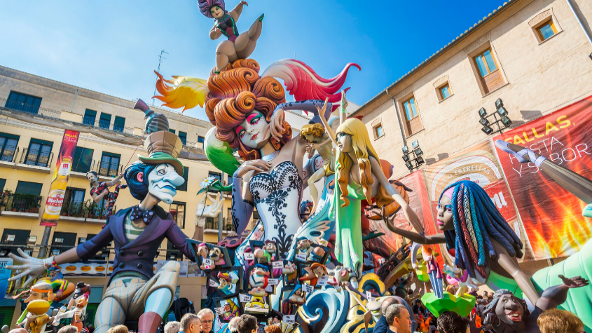
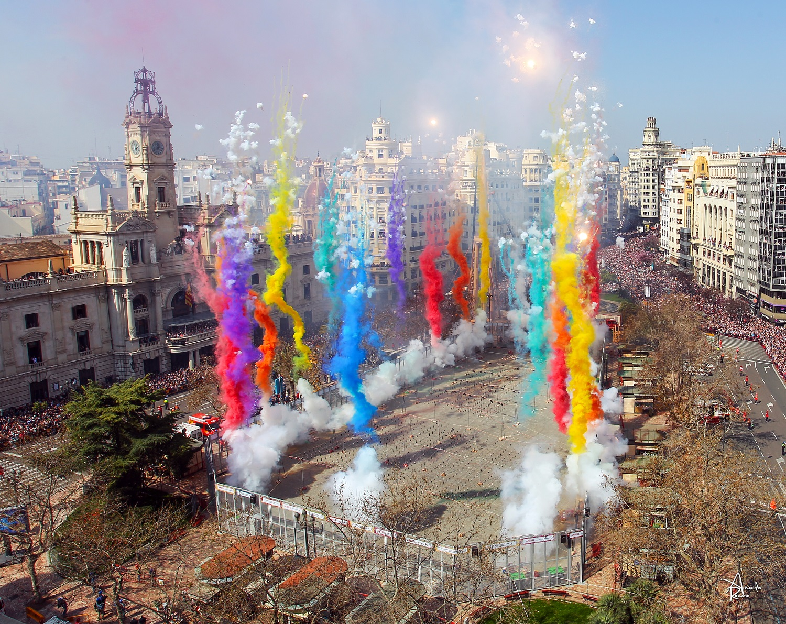
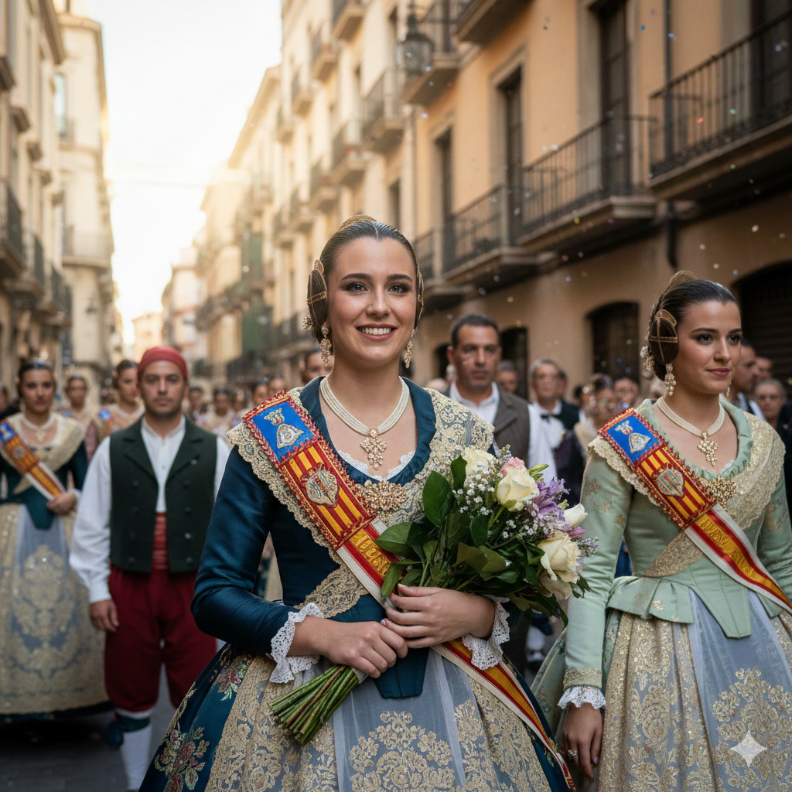
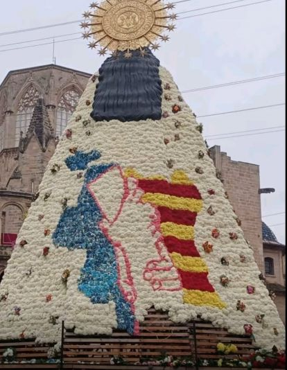

Las Fallas de Valencia
Valencia · Fiesta tradicional de origen histórico-cultural · "Arte que arde, tradición que renace."
- Respeta la dimensión religiosa de la Ofrenda y los actos en honor a la Virgen de los Desamparados.
- Sigue las indicaciones de protección civil en los actos pirotécnicos.
- Solicita permiso antes de publicar fotos de personas identificables.
La esencia de la fiesta
Las Fallas de Valencia son un estallido de luz, fuego y creatividad que transforma la ciudad cada marzo en un escenario vibrante y efervescente. Entre el aroma a pólvora, las melodías de las bandas y el bullicio festivo, Valencia vibra con una energía que despierta todos los sentidos. Monumentos gigantes de arte efímero se alzan en cada esquina, esperando su destino entre llamas. Las calles se llenan de color, tradición y emoción, mientras vecinos y visitantes viven intensamente una celebración que combina ingenio, sátira y devoción. Las Fallas laten, crecen y finalmente arden, dejando una huella inolvidable en quienes las viven.
¿En qué consiste?
Las Fallas de Valencia son una de las fiestas más emblemáticas de España, celebradas cada año del 15 al 19 de marzo en honor a San José. Esta festividad combina arte, sátira, pirotecnia y tradición en una experiencia única que convierte a la ciudad en un museo efímero al aire libre. El corazón de la fiesta son los monumentos falleros: enormes figuras de cartón, madera y poliéster que representan escenas humorísticas, críticas sociales o personajes populares. Cada barrio instala su propia falla mayor y falla infantil, elaboradas durante meses por artistas falleros y comisiones que trabajan de forma conjunta.
Durante los días festivos, las calles cobran vida con mascletàs —poderosos espectáculos sonoros de pirotecnia—, desfiles, música de bandas, pasacalles y actividades organizadas por cada comisión. Uno de los momentos más emotivos es la Ofrenda a la Virgen de los Desamparados, en la que miles de falleras y falleros vestidos con trajes tradicionales llenan de flores la estructura monumental que se erige en la Plaza de la Virgen. La fiesta culmina el 19 de marzo con La Cremà, cuando todas las fallas se queman creando un espectáculo impresionante de fuego y emoción que simboliza renovación y final de ciclo.
Historia y significado
El origen de Las Fallas se remonta a tradiciones medievales de los carpinteros valencianos, quienes, al llegar la primavera, quemaban en la calle restos de madera sobrantes del invierno. Con el tiempo, estos montones se empezaron a adornar con figuras humanas llamadas ninots que representaban escenas humorísticas de la vida cotidiana. Durante los siglos XVIII y XIX las fallas evolucionaron hasta representaciones más elaboradas, convirtiéndose en un reflejo crítico de la sociedad y las costumbres valencianas. En el siglo XX, con la profesionalización de los artistas falleros y el crecimiento de las comisiones, las fallas adquirieron la espectacularidad que hoy las caracteriza. En 2016 fueron reconocidas por la UNESCO como Patrimonio Cultural Inmaterial de la Humanidad.
Fechas y calendario
Del 1 al 19 de marzo se concentran los actos oficiales, con mascletàs diarias en la Plaza del Ayuntamiento a las 14:00. La semana grande es del 15 al 19 de marzo, cuando las fallas están plantadas y se celebran los principales actos. El día 19, festividad de San José, tiene lugar la Cremà de todos los monumentos.
Actos destacados
- Mascletà: espectáculo pirotécnico diurno de fuerte impacto sonoro, todos los días en la Plaza del Ayuntamiento (del 1 al 19 de marzo, 14:00).
- Plantà: montaje de los monumentos falleros; a partir del 15 de marzo la ciudad se convierte en un museo al aire libre.
- Ofrenda de flores: desfile de todas las comisiones falleras hasta la Plaza de la Virgen para completar el manto floral (17 y 18 de marzo, tarde-noche).
- Nit del Foc: gran castillo de fuegos artificiales, el espectáculo pirotécnico más impactante de las fiestas (18 de marzo por la noche).
- Cremà: quema de las fallas el 19 de marzo; primero las infantiles (sobre las 20:00), luego las grandes (sobre las 22:00), con la falla municipal en la Plaza del Ayuntamiento como cierre.
Música y sonido
Las bandas de música son fundamentales en las Fallas, no solo como acompañamiento sonoro sino como elemento identitario y de cohesión social. Animan actos como la despertà, la recogida de premios, la Ofrenda de flores y los pasacalles, tocando pasodobles clásicos como "Valencia", "El Fallero" o "Paquito el Chocolatero". Los instrumentos tradicionales como la dulzaina y el tabal, presentes especialmente durante la Ofrenda, refuerzan el carácter cultural y ancestral de la celebración.
Por la mañana en la despertà suenan pasodobles alegres; por la tarde en la Ofrenda, piezas más elegantes y emotivas. En las verbenas nocturnas la intensidad sube con orquesta o discomóvil hasta bien entrada la madrugada.
- No cruces por medio de una banda en movimiento; un golpe con un instrumento puede hacer daño.
- Durante la Ofrenda escucha los diferentes pasodobles de cada banda: la variedad es parte del espectáculo.
- Respeta los horarios oficiales: las bandas tienen programación cerrada con cada comisión.
No te lo puedes perder
- Vivir una mascletà en la Plaza del Ayuntamiento y sentir el estruendo en el cuerpo.
- Visitar la Plaza de la Virgen el día 19 por la mañana y admirar el manto de flores de la Ofrenda.
- Probar la gastronomía: paella valenciana y buñuelos de calabaza con chocolate.
- El castillo de fuegos de la Nit del Foc desde el viejo cauce del Turia junto a la Ciutat de les Arts.
- Visitar el Museu Faller, donde se guardan los ninots indultats de todos los años.
Monumentos más importantes (Sección Especial 2025)
- Falla Convento Jerusalén - Matemático Marzal
- Falla L'Antiga de Campanar
- Falla Na Jordana
- Falla Plaza del Pilar
- Falla Exposición - Micer Mascó
- Falla Reino de Valencia - Duque de Calabria
- Falla Cuba - Literato Azorín
- Falla Sueca - Literato Azorín
- Falla Almirante Cadarso - Conde Altea
En Valencia se plantan un total de 384 fallas de diferentes secciones repartidas por toda la ciudad, sin contar las fallas infantiles. Más allá de la Sección Especial, encontrarás monumentos falleros en prácticamente cada barrio.
Fuente: Junta Central Fallera — última verificación: 2025-03-01
Consejos prácticos
- Usa calzado cómodo: muchas calles están cerradas al tráfico y caminarás mucho.
- Protege tus oídos con tapones si vas a ver alguna mascletà.
- Valencia recibe muchísimos visitantes esos días; anticípate a las aglomeraciones.
- Lleva agua; aunque es marzo, en Valencia puede hacer calor.
Vocabulario festero
- Falla
- Monumento artístico y satírico fabricado de material sintético para ser quemado el día de San José.
- Fallera/o
- Persona que pertenece a una comisión fallera, propietaria del monumento de su barrio.
- Ninot
- Figura o muñeco de material sintético que forma parte del monumento fallero.
- Llibret
- Libro que explica la temática, versos y críticas de la falla.
- Casal
- Sede social de la comisión fallera donde los miembros se reúnen durante todo el año.
- Plantà
- Acto de montar y dejar instalada la falla definitiva en la calle.
- Cremà
- Acto de la quema del monumento el 19 de marzo.
- Mascletà
- Espectáculo pirotécnico diurno, muy ruidoso, que se celebra cada día durante las Fallas.
- Crida
- Acto de proclamación que da inicio oficial a las Fallas, realizado por la Fallera Mayor.
Galería




Enlaces útiles
Última verificación de enlaces: 2025-03-01
Preguntas frecuentes
- ¿Cuándo se celebra?
- Del 15 al 19 de marzo, con actos previos desde el 1 de marzo. El día clave es el 19, festividad de San José.
- ¿Es apta para familias?
- Sí, hay actividades para todas las edades: mascletàs, pasacalles, desfiles y la sección infantil. Los actos pirotécnicos requieren precaución con los más pequeños.
- ¿Hay zonas para movilidad reducida?
- Sí, el Ayuntamiento habilita zonas específicas en la Plaza del Ayuntamiento (mascletàs), Plaza de la Virgen (Ofrenda) y Jardín del Turia (Nit del Foc). Consulta el mapa de accesibilidad y el servicio de autobús adaptado.
- ¿Dónde informarse de cambios de última hora?
- En la web del Ayuntamiento de Valencia y los canales oficiales de la Junta Central Fallera.